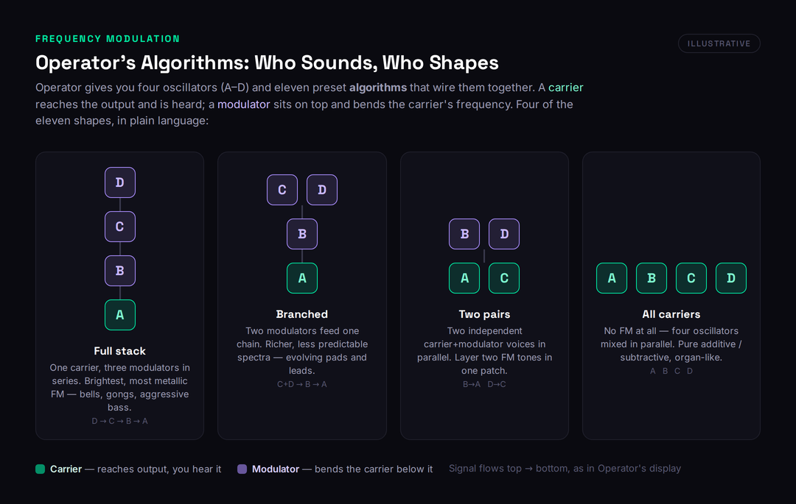
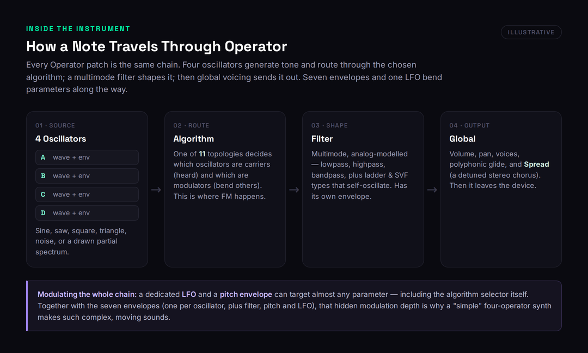
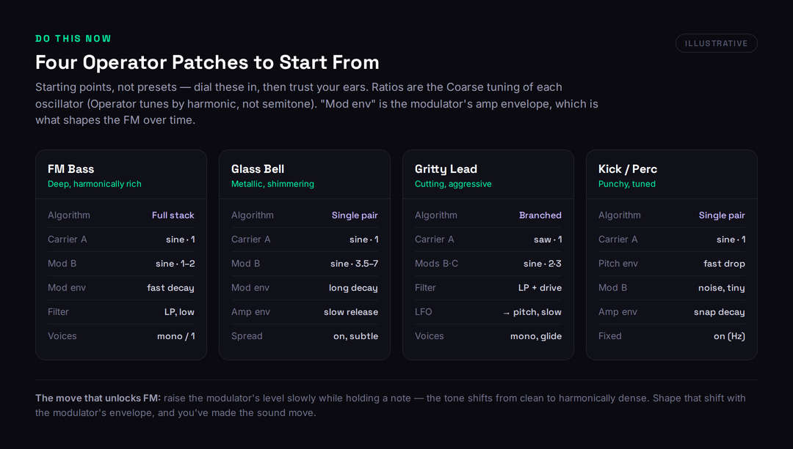

Most reviews of Ableton Operator do one of two things: they call it “Ableton’s FM synth” and move on, or they bury it under a wall of operator-and-carrier jargon that makes FM sound like a maths exam. Neither tells you the thing that actually matters. If you own Ableton Live Suite, you already own a deep, CPU-light synthesizer that does bass, bells, electric pianos and percussion beautifully — and the odds are you have never really learned it. This is a review of an instrument millions of producers paid for and quietly ignored.
So here is the honest version up front. Operator is one of the best-value synths in any DAW, because for most people it costs nothing extra — it ships with Live Suite. It is built around FM, additive and subtractive synthesis in one panel, it is remarkably efficient on CPU, and its clean layout makes it far less intimidating than FM’s reputation suggests. But it is not a modern flagship. There is no wavetable engine, no built-in unison-spread wall of voices to rival Serum, and the interface is showing its age next to Pigments or Phase Plant. The two things nobody leads with are that Operator’s reach is much wider than “the FM one”, and that its limitations are specific and easy to work around once you know them. This review is about exactly where it wins and where it doesn’t.
How we approached this. We re-verified Operator’s feature set, edition bundling and pricing against Ableton’s live product pages and the Live manual this session, plus current tutorials and the active user community — not older write-ups, several of which mis-state which Live editions include it. This is a reasoning-and-documentation review, not a first-party benchmark: we did not run a controlled CPU-load test in our own room, so every claim about efficiency is framed as reasoning from the synth’s architecture and the consensus of producers who lean on it daily — never a fabricated measurement. Where a number could move — especially edition bundling and the add-on price — we tell you to confirm it on Ableton’s compare-editions page. Let’s get into it.
Operator is the most underrated synth in Ableton Live — a CPU-light FM, additive and subtractive instrument that’s superb for bass, bells, electric pianos and percussion, and that most Suite owners already have. Learn it if you use Ableton and want fast, characterful sound design without taxing your CPU — especially bass and metallic tones, where FM has a natural edge. Reach for a modern flagship instead if you need wavetable morphing, huge supersaw-style unison, or a deep visual modulation matrix; that’s Serum or Pigments territory. It ships with Live Suite; other editions can add it as a paid in-Live extra (around $99 — confirm your edition). Treated as the focused FM-and-more workhorse it is, it’s excellent. Mistaken for a do-everything modern synth, it will feel dated.
The Verdict
The most underrated synth in Ableton Live — and you may already own it
| Sound (FM & additive character) | 9.0 | |
| Versatility (bass, bell, EP, perc, lead) | 8.9 | |
| CPU efficiency | 9.2 | |
| Workflow & learning curve | 8.3 | |
| Modern features vs flagship synths | 7.7 | |
| Value (bundled with Live Suite) | 9.4 | |
| Who it's for | 8.6 |
Operator is Ableton's hybrid FM, additive and subtractive synthesizer, included with Live Suite (and available to other editions as a paid in-Live add-on). It is CPU-light, fast for bass, bells, electric pianos and percussion, and hides far more modulation depth than its tidy face suggests. It loses to modern flagships on wavetables, drawn-out unison and a dated interface — but for the millions of Live owners who already have it, it is the best synth most of them have never learned.
What Operator Actually Is
Operator is the FM synthesizer built into Ableton Live. Ableton describes it as an instrument that combines frequency modulation with classic subtractive and additive synthesis, and that three-way description is the whole story: it is not a one-trick FM box. Under the hood it gives you four multi-waveform oscillators that can modulate one another's frequencies, a multimode filter, a dedicated LFO, a pitch envelope, and a set of global controls — all wrapped in the clean, display-plus-shell layout that makes Live's own devices feel approachable. It first shipped with Live 5 back in 2005, got a major overhaul in Live 8 that added drawable additive partials and new filter types, and has been quietly powerful ever since.
The reason Operator matters is not novelty. It is reach. FM synthesis has intimidated producers for forty years — the Yamaha DX7 that defined the sound of the 1980s was famously hard to program — and most people who own Operator open it once, see the four oscillators and the cryptic algorithm icons, and quietly close it again. That is a shame, because Operator is arguably the friendliest on-ramp to FM ever made. If you have never worked through the basics of how a synthesizer makes sound, Operator is a forgiving place to learn, and if you already think in subtractive terms, its all-carrier mode lets you start on familiar ground before you ever touch frequency modulation.
This review treats Operator as both a product to judge and an instrument to learn. The scorecard above is an honest verdict on where it wins and where it shows its age. The sections that follow are a practical guide: how its FM engine is wired, how a note travels through it, where it genuinely beats reaching for a third-party synth, where it doesn't, and four patches you can build tonight. By the end you should know whether to invest the afternoon it takes to get fluent — and for most Live owners, the answer is yes.
The Synth You Already Paid For
Here is the part that changes the math. Operator is included with Ableton Live Suite. If you bought Suite — or if you are on the 30-day Suite trial, which is the version Ableton hands every new user — Operator is sitting in your instrument browser right now, fully unlocked, no extra purchase, no rental. That is genuinely unusual: a capable FM synth with no separate license to manage, no installer, no authorization dance, already integrated into the DAW you work in every day. For a fuller picture of what each tier includes, our Ableton Live 12 review walks through the editions, and if you are still finding your way around the program, the Ableton Live beginners guide is the gentler starting point.
Two honest caveats. First, edition bundling has shifted across Live versions, and Ableton periodically moves devices between tiers, so if you are on Intro or Standard you should confirm Operator's availability for your exact edition on Ableton's own compare-editions page rather than trusting any third-party summary — including this one. Second, Intro, Lite and Standard owners who do not have it bundled can still add Operator to Live as a paid instrument; historically that add-on has sold for around US$99 direct from Ableton. It only ever runs inside Live, though — there is no standalone VST or AU version you can load into another DAW. That tight integration is a strength when you live in Live and a hard wall if you don't.
Why does ownership change the verdict so much? Because the honest competitive question for most readers is not "is Operator better than Serum." It is "should I learn the powerful FM synth I already own, or spend money and a learning curve on another one." Framed that way, Operator's value score of 9.4 is not generosity — it is arithmetic. A tool you already have, that covers FM, additive and subtractive sound design, that barely touches your CPU, is worth an afternoon of your attention before you open your wallet.
How FM Synthesis Works in Operator
To use Operator well you need one idea, and it is simpler than its reputation. In frequency modulation, one oscillator's output is used to rapidly bend the pitch of another. Do that slowly and you get vibrato. Do it fast — at audio rate — and your ear stops hearing the wobble as pitch movement and starts hearing it as new harmonic content. A pure sine wave, which has no harmonics of its own, becomes bright and complex. That is the entire trick, and everything else is detail. If the underlying concept is still fuzzy, our Bible entry on FM synthesis lays it out from first principles, and the entry on the oscillator covers the building block doing the work.
In Operator the four sound sources are labelled A, B, C and D, and Ableton calls them oscillators, but in FM terms each one is an operator — an oscillator paired with its own amplitude envelope. That envelope is the secret weapon. Whether an operator is heard directly or used to modulate another is decided by the algorithm: Operator offers eleven preset algorithms, each a different wiring diagram for the four operators. An operator that reaches the output is a carrier — you hear it. An operator stacked on top of a carrier is a modulator — you don't hear it directly, but it bends the carrier's frequency and so reshapes its tone. Signal flows from top to bottom, exactly as the little algorithm icons show.

Illustrative: four of Operator's eleven algorithms, in plain language. Green carriers are heard; purple modulators bend the carrier below them.
This is why the same four oscillators can become a sub bass, a glass bell or a snare. In the full-stack algorithm, three modulators feed a single carrier in series for the brightest, most metallic FM — the sound of bells and gongs and aggressive basses. In a parallel algorithm, several carriers reach the output at once with no FM at all, and Operator behaves like a straightforward additive or subtractive synth. Most patches live between those extremes. The crucial habit to build is reading the algorithm first: it tells you, at a glance, which knobs make tone and which make timbre.
It helps to understand why the algorithm matters so much, because it is the one place Operator's simplicity hides real consequence. In a subtractive synth, every oscillator is independent and additive — you stack them and filter the result. In FM, the relationships are everything: the same four oscillators produce wildly different sounds depending purely on who modulates whom and in what order. Move oscillator B from being a parallel carrier to being a modulator on A, and you have not adjusted a sound, you have changed its fundamental nature. That is why Operator lets you modulate and even MIDI-map the algorithm selector itself: scrolling through algorithms while holding a chord is one of the fastest ways to stumble onto a sound you would never have programmed deliberately. Once you stop seeing the algorithm icons as decoration and start reading them as the wiring diagram they are, the instrument opens up.
One Operator quirk trips up everyone coming from analog synths. The Coarse control does not tune in semitones or octaves — it tunes in harmonic ratios. Set a modulator to a Coarse value of 1, 2 or 3 and it tracks the carrier at integer multiples of the fundamental, producing clean, harmonic, musical results. Set it to a non-integer like 3.5 and you get clangorous, inharmonic, bell-like spectra. That single behaviour is the difference between an FM bass that sits in the mix and a metallic chime that floats above it. If you want to internalize how those ratios map to actual pitches, our note-to-frequency tool and the synthesis parameter reference are quick companions while you experiment.
The Signal Path, Start to Finish
For all its depth, every Operator patch follows the same chain, and seeing it whole demystifies the instrument. Tone is generated by the four oscillators, routed through the algorithm, shaped by a filter, and sent out through a global section — while a bank of envelopes and an LFO bend parameters along the way. Knowing that fixed order tells you where to reach when a sound isn't doing what you want.

Illustrative: the four stages every Operator note passes through, plus the LFO and pitch envelope that modulate the whole chain.
The oscillators come first. Each can be a sine, sawtooth, square or triangle, one of two noise types, or a waveform you draw yourself in the partial editor by setting the level of individual harmonics — that drawable additive engine is one of Operator's most underused features. After the oscillators comes the filter, and it is better than a built-in filter has any right to be: multimode, analog-modelled, with ladder and state-variable types that self-oscillate at high resonance, plus built-in saturation that adds harmonics rather than just removing them. It has its own envelope, so the filter can open and close over the life of a note. If filters and their envelopes are still abstract to you, the envelope and ADSR entries explain the shapes, and the ADSR visualizer lets you see them move.
The last stage is global — volume, pan, voice count, polyphonic glide, and Spread, a built-in stereo widener that detunes two voices and pans them apart for instant width. Threaded across all of this is the modulation layer: a dedicated LFO and a pitch envelope that can target almost any parameter, including, remarkably, the algorithm selector itself. Add the seven envelopes — one per oscillator plus filter, pitch and LFO — and you have the real answer to why a "simple" four-operator synth makes such complex, evolving sounds. The depth isn't on the surface; it is in the modulation routing waiting behind the display. For producers who like to stack instruments, understanding this chain also makes Operator a far better partner in a layered synth patch, where its clean FM tones sit beautifully under a thicker analog-style layer.
Where Operator Genuinely Wins
Three things make Operator worth real fluency. The first is bass. FM produces low-end harmonic complexity that subtractive synths struggle to match — a tone that has movement and bite without needing a stack of effects to survive a busy mix. A two-operator FM bass in Operator can carry an entire track, and once you understand ratios it becomes one of the fastest bass-design workflows there is. If low end is your focus, pair this review with our guide to making bass music, where FM patches earn their place repeatedly.
The second is efficiency. Operator is famously light on CPU. That sounds like a footnote until you are forty tracks deep, or playing live, where a rich sound that doesn't spike your processor is the difference between a stable set and a crash. It is one reason Operator turns up in professional rigs far more than its modest reputation suggests — Skrillex has named it among the sources of his signature bass sounds, and Robert Henke of Monolake helped shape Live itself around exactly this kind of efficient, deep instrument. For everyday electronic work, that headroom means you can run several instances where one third-party synth might tax your machine, which matters when you are building an EDM track with layered synth parts.
The third is range. Because Operator spans FM, additive and subtractive synthesis in one device, it covers an enormous spread of sounds: gritty leads, glassy electric pianos, metallic percussion, evolving pads, rhythmic atmospheres using its looping envelopes, and of course bass. That breadth, combined with how quickly you can move once the interface clicks, makes it a genuine sound-design workhorse rather than a specialist. Many of the moves in our broader sound-design plugin guide translate directly to Operator, and Live's own tips and tricks for racks and automation multiply what a single Operator patch can do.
It is worth dwelling on the electric-piano and percussion side, because it is where Operator quietly outclasses expectation. The bright, bell-inflected Rhodes and Wurlitzer-style tones that defined FM's commercial era come naturally to it — a sine carrier, a modulator tuned to a clean harmonic ratio, and a velocity-sensitive envelope gets you a usable electric piano in minutes, and the slight inharmonicity you can dial in with the modulator ratio is exactly what gives real electric pianos their character. Percussion is the same story: a single sine with a fast pitch-envelope drop is a tuned kick, a noise oscillator through a quick decay is a hat or a clap, and Operator's looping envelopes can generate entire rhythmic patterns from one held note. None of this needs a sample library, and all of it sits in the same device you would reach for to make a bass — which is the deeper point about Operator's range. It is not that it can do many things adequately; it is that it does several specific things, FM bass and FM keys and tuned percussion chief among them, genuinely well.
Where It Loses to Modern Flagships
Honesty is the only thing that makes a verdict useful, so here is the case against. Operator's lowest score — modern features versus flagship synths, at 7.7 — is the axis that keeps this review credible, and it is earned. The most obvious gap is no wavetable engine. Operator's drawable partials are powerful but they are not the morphing, scannable wavetables that define a modern synth like Serum or Ableton's own Wavetable. If wavetable motion is central to the sound you hear in your head, Operator will frustrate you, and our Serum 2 review covers what that workflow looks like at the high end.
The second gap is unison and width. Operator's Spread gives you a tasteful two-voice stereo detune, but it cannot produce the massive seven-voice supersaw spread that defines a lot of contemporary lead and bass design. For those huge detuned stacks you reach for a dedicated synth, and the field is well covered in our roundups of the best synth plugins and the best plugins for EDM. The third is simply age: the interface, while clean, is a product of its era, with no drag-and-drop modulation matrix, no built-in effects rack, and a workflow that asks more of you than newer synths whose modulation is visible and immediate.
None of this makes Operator bad. It makes Operator specific. It is a superb FM and additive instrument with a dated face and a few missing modern conveniences. If your music depends on wavetables and huge unison, Operator is a supporting player, not the star — but as a supporting player that costs nothing extra and barely touches your CPU, it still earns a permanent place in the rack.
Four Patches to Build Tonight
Reading about FM gets you nowhere; building does. Here are four starting points, each chosen to teach a different part of the instrument. Treat the numbers as launch pads, not presets — dial them in, then trust your ears.

Illustrative starting points for four classic Operator patches. Ratios are each oscillator's Coarse harmonic tuning.
Start with the FM bass, because it teaches the core move. Choose a stacked algorithm, set carrier A to a sine at ratio 1, put modulator B on a sine at ratio 1 or 2, and then — this is the whole lesson — raise B's level slowly while you hold a note. You will hear the tone shift from a clean sine into something harmonically dense and growling. Shape that shift with B's amplitude envelope: a fast decay gives you a punchy, plucked attack that cuts and then settles. Run it through the filter low, keep it mono, and you have a bass that needs almost no further processing. When it comes time to fit it under a kick, the same instincts from our sidechaining in Ableton guide apply directly.
The glass bell teaches inharmonic ratios. Same single carrier-and-modulator pair, but set the modulator to a non-integer ratio — somewhere between 3.5 and 7 — and give it a long decay. The clangorous, metallic spectrum that results is pure FM, the sound subtractive synths cannot make. The gritty lead teaches branching: a saw carrier with two modulators feeding it, the filter driven hard for saturation, a slow LFO nudging the pitch for life, mono with glide for expressive slides. And the kick teaches the pitch envelope: a single sine carrier, Fixed mode on so it sits at a set frequency, a fast pitch-envelope drop for the classic click-to-thump, and a snappy amp decay. Build those four and you will understand Operator better than most people who have owned it for years.
Who Should Learn It, Who Can Skip It
Learn Operator if you own Live Suite and want more sound-design range without spending money — that is most readers, and the return on a single focused afternoon is enormous. Learn it if you make bass-forward music, because FM bass is a genuine superpower. Learn it if you perform live or run CPU-heavy sessions, because its efficiency is a real, practical advantage. And learn it if FM has always intimidated you, because Operator is the gentlest serious FM synth ever built — a far kinder teacher than a vintage DX7 or a deep modular FM environment.
You can skip Operator, fairly, if you do not use Live, since it has no standalone version. You can deprioritize it if your music is built entirely on wavetables and massive supersaws, where a dedicated flagship will serve you better — though even then, Operator makes an excellent, CPU-cheap layering partner. But "skip" should almost never mean "ignore." For the producer who already has it, leaving Operator unlearned is leaving real capability on the table. Not sure which synthesis approach fits the sound you're chasing? Our synthesis type selector is a quick way to point yourself at FM, wavetable or subtractive before you commit an afternoon.
Try It Yourself
Three exercises, in rising difficulty. Do them in order and you will go from "what are all these knobs" to genuinely fluent. Open a fresh Operator on a MIDI track, loop a single held note, and work through them.
- Load Operator. Select the rightmost (all-carrier) algorithm, then disable oscillators C and D so only A and B remain.
- Choose a stacked algorithm so B sits on top of A as a modulator. Set both to sine waves, both at Coarse ratio 1.
- Hold a note and slowly raise oscillator B's Level from zero. Listen as the clean sine grows brighter and more complex — that is frequency modulation.
- Now change B's Coarse to 2, then 3, then 3.5. Notice how integer ratios stay musical and the non-integer turns metallic.
- Keep your two-operator patch. Select oscillator B and open its amplitude envelope in the central display.
- Give B a high initial level but a fast decay to zero. Hold a note: the sound should now have a bright, percussive attack that settles into a purer tone.
- Lengthen B's decay and add sustain. The brightness now lingers — you are sculpting timbre with an envelope, the heart of FM sound design.
- Add the filter: set it low with its own envelope opening slowly. You have just combined FM and subtractive synthesis in one patch.
- Design a full FM bass using the recipe above: stacked algorithm, fast modulator decay, filtered low, mono with a touch of glide.
- Route the LFO to pitch at a slow rate and tiny depth for subtle drift, then automate the algorithm selector across a few values to hear the timbre jump.
- Draw a custom waveform in oscillator A's partial editor — emphasise a few odd harmonics — and hear how the FM result changes.
- Save it as a Rack with a couple of macros (filter cutoff, modulator level) mapped for live tweaking. You now have a reusable, performable Operator instrument.
The Verdict
Operator earns an 8.6 because it does something almost no other instrument can claim: it delivers genuine FM, additive and subtractive sound design, with professional-grade efficiency, to millions of producers who already own it and mostly don't know how good it is. Its flaws are real and specific — no wavetables, limited unison, an interface showing its age — and they keep it out of flagship territory. But the question that matters for most readers isn't whether Operator beats a paid modern synth. It is whether the powerful FM synth already in your Live browser deserves an afternoon of your attention. It does. Learn the algorithm, learn the ratios, build the four patches, and Operator stops being the device you close and becomes one you reach for — the most underrated instrument in Live, and one you already paid for.
Frequently Asked Questions
Operator is included with Ableton Live Suite at no extra cost, and it's also in the 30-day Suite trial that Ableton gives new users. It is not bundled with Intro or Lite. Whether it ships with Standard has shifted across Live versions, so confirm your exact edition on Ableton's compare-editions page. Intro, Lite and Standard owners who don't have it bundled can buy it as an in-Live add-on — historically around US$99 direct from Ableton.
No. Operator runs only inside Ableton Live as a native device — there is no standalone VST, AU or AAX version you can load into Logic, FL Studio or another host. That deep integration is part of why it's so efficient and stable, but it does mean Operator is only useful to you if Live is your DAW or part of your workflow.
Less than its reputation suggests. FM has a reputation for being opaque, but Operator's clean layout and its all-carrier mode — which behaves like a familiar subtractive synth — make it the friendliest serious FM synth available. The one concept to grasp is that raising a modulator's level adds harmonic content, and its envelope shapes that over time. Work through the three exercises in this guide and you'll be fluent in an afternoon.
They solve different problems. Serum is a wavetable synth built around morphing, scannable wavetables and big visual modulation; Operator is an FM, additive and subtractive synth that's CPU-light and already in Live Suite. Choose Serum if wavetable motion and massive unison define your sound; choose Operator for FM bass, bells, electric pianos and percussion — or simply because you already own it. Many producers keep both and layer them. Our Serum 2 review covers the wavetable side in depth.
Bass, first and foremost — FM gives low end a harmonic complexity that cuts through a mix with little extra processing. It also excels at bells, metallic and glassy tones, electric-piano sounds, tuned percussion and kicks, and evolving rhythmic textures using its looping envelopes. Combined with its very low CPU use, that range makes it a true sound-design workhorse rather than a one-trick FM box.
Four oscillators — labelled A, B, C and D, and in FM terms each is an operator with its own amplitude envelope — plus a dedicated LFO. They can be wired together using eleven preset algorithms, each a different topology of carriers and modulators. Beyond those, Operator has a multimode filter, a pitch envelope, drawable additive partials, and global controls including polyphonic glide and a stereo Spread.
Because Operator tunes oscillators by harmonic ratio rather than by semitone. A Coarse value of 1, 2 or 3 tracks the carrier at integer multiples of the fundamental, which keeps the result musical and in tune. Non-integer values like 3.5 produce inharmonic, metallic, bell-like spectra. Understanding that integers stay harmonic and non-integers turn clangorous is the single most useful piece of Operator knowledge for designing your own sounds.
Yes — this is one of its quiet strengths. Operator is very efficient on CPU, so it stays stable in dense sets where heavier synths can cause spikes and dropouts, and it lives natively inside Live, the DAW many performers already use on stage. Save your patches as Racks with a few macros mapped, and Operator becomes a reliable, tweakable performance instrument that won't put your set at risk.